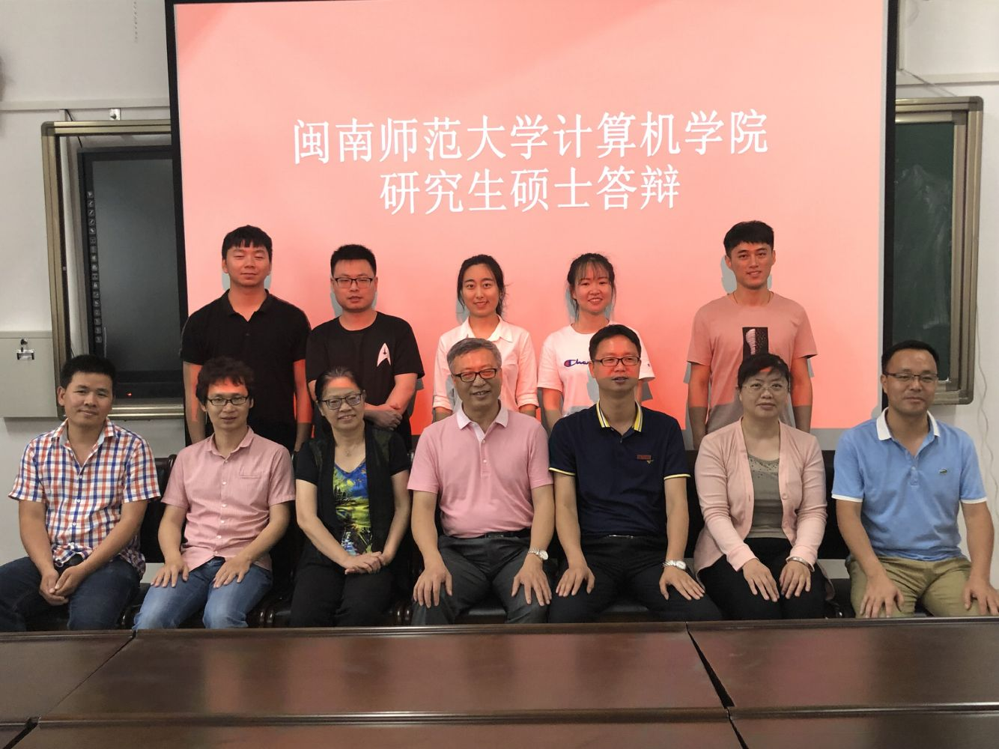

大数据研究实验室
首页

|
BiGo大数据研究实验室是闽南师范大学计算机学院林耀进老师指导下的科研团队，大数据研究实验室现有硕士生导师2人，在读研究生18人。 BiGo Big Data Research Laboratory is a scientific research team under the guidance of Professor Lin Yao-jin, School of Computer Science, Minnan Normal University. There are 2 master supervisors and 18 postgraduate students in the Big Data Research Laboratory.The research directions of the laboratory are flow environmental knowledge discovery, causal discovery learning, inconsistency learning, hierarchical classification learning, etc.The lab members have published many papers and achieved good results.
联系方式：
E-mail： zzlinyaojin@163.com 或yjlin@mnnu.edu.cn |